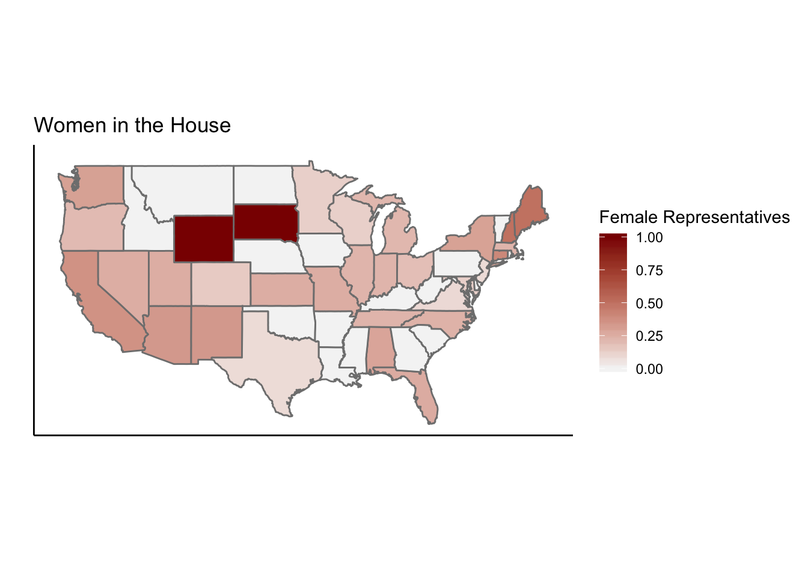

## Warning: Missing column names filled in: 'X1' [1]## Parsed with column specification:
## cols(
## X1 = col_double(),
## state = col_character(),
## senators = col_double(),
## representatives = col_double(),
## total = col_double()
## )##Graph 1
stateData$repProp <- stateData$representatives/stateData$total
housePlot <- ggplot()+geom_polygon(data=stateData,aes(x=long, y=lat, group = group, fill=repProp),color="grey50")+coord_map()+labs(x="",y="",title="Women in the House")+theme_classic()+ theme(axis.ticks.y = element_blank(),axis.text.y = element_blank(), axis.ticks.x = element_blank(),axis.text.x = element_blank()) + scale_fill_gradient(name="Female Representatives",low="whitesmoke",high="darkred")
housePlot
##Graph 2
## Warning: Missing column names filled in: 'X1' [1]## Parsed with column specification:
## cols(
## X1 = col_character(),
## ObamaVotes = col_double(),
## ObamaEV = col_double(),
## RomneyVotes = col_double(),
## RomneyEV = col_double(),
## JohnsonVotes = col_double(),
## JohnsonEV = col_double(),
## SteinVotes = col_double(),
## SteinEV = col_double()
## )names(electionData)[1] <- "region"
electionData$ObamaPerc <- electionData$ObamaVotes/(electionData$ObamaVotes+electionData$RomneyVotes+electionData$JohnsonVotes+electionData$SteinVotes)
electionData <- merge(all_states,electionData,by="region")
south <- filter(electionData, region %in% c("texas", "oklahoma", "arkansas", "louisiana", "alabama", "mississippi", "tennessee", "georgia", "florida", "south carolina", "north carolina", "virginia", "west virginia", "kentucky", "maryland", "delaware", "district of columbia"))
SouthPlot <- ggplot()+geom_polygon(data=south,aes(x=long, y=lat, group = group, fill=ObamaPerc),color="grey50")+coord_map()+labs(x="",y="",title="2012 Election Results")+theme_classic()+ theme(axis.ticks.y = element_blank(),axis.text.y = element_blank(), axis.ticks.x = element_blank(),axis.text.x = element_blank()) + scale_fill_gradient2(name="Obama's Percenatage",low="red",mid="white",high="blue",midpoint=.5)
SouthPlotFor inquiries email Ted Getselman at tg614@georgetown.edu.